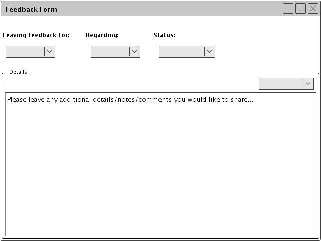
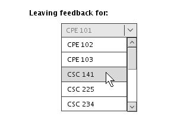

2.6. Student Access/Feedback
Schedule tool incorporates a mechanism to allow students to leave feedback for scheduling administrators to consider. Students will be able to comment on classes based on whether they enrolled, dropped, crashed, or waitlisted them, as detailed below in figure X, via the menu option under File-->Leave Feedback.

Figure 92: Student feedback - Blank
Figure 91: Student feedback - Blank
Figure 88: Student feedback - Blank
Figure 86: Student feedback - Blank
Figure 84: Student feedback - Blank
Figure 57Student feedback - Blank
The details of each field within this field are illustrated below. The user is presented with 3 top-level drop-downs to help specify which kind of feedback they wish to leave.

Figure 93: Student feedback - Class pulldown
Figure 92: Student feedback - Class pulldown
Figure 89: Student feedback - Class pulldown
Figure 87: Student feedback - Class pulldown
Figure 85: Student feedback - Class pulldown
Figure 58Student feedback - Class pulldown
First, a student specifies the class which they wish to leave feedback for. All classes available for the current quarter will be displayed under the Leaving feedback for: drop-down. (The "current quarter" is the quarter which the currently opened schedule pertains to).
Subsequently, the user can specify which aspect of the class they wish to comment about. In particular, these options pertain to enrollment, whether past, present, or future.
Furthermore, the user can detail the status of whatever they are leaving feedback about. Thus, an administrator viewing the feedback can quickly understand the difference between feedback for successful and unsuccesful class crashing.
Here, the student may give any other details they wish to offer. A drop-down presents the user with a given set of commonly used, "stock" details, and a Comments: field allows the user to explicitly type out any specifics which the rest of the feedback form did not address.
Here, a student is leaving feedback regarding unsuccessfully crashing CPE 101. In the Details field, the user specifies that they were not able to crash CPE 101 because the class was too full, and the waitlist for the class was too long.
Feedback left by students is sent to an undisclosed administrator address, where it is subsequently forwarded to the e-mail addresses of all registered administrators. Given the multiple fields incorporated into the student feedback, these messages can be filtered and sent to specific administratros. This allows an automated delegation of information to those individuals who are responsible for a given aspect of the schedule.
Currently, there is no mechanism by which an administrator can personally respond to a student's comments. (Feedback is essentially anonymous).
prev: view availability | next: server administration | up | index